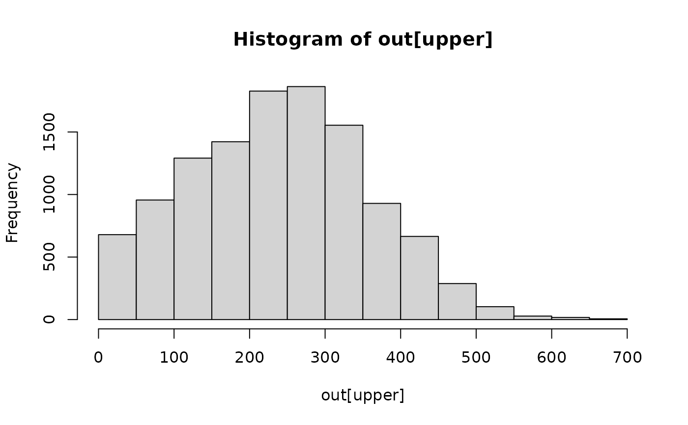

rdist.earth.RdGiven two sets of longitude/latitude locations, rdist.earth computes
the Great circle (geographic) distance matrix among all pairings and
rdist.earth.vec computes a vector of pairwise great circle distances
between corresponding elements of the input locations using the Haversine
method and is used in empirical variogram calculations.
rdist.earth(x1, x2, miles = TRUE, R = NULL)
RdistEarth(x1, x2=NULL, miles=TRUE, R=NULL)
rdist.earth.vec(x1, x2, miles = TRUE, R = NULL)Matrix of first set of lon/lat coordinates first column is the longitudes and second is the latitudes.
Matrix of second set of lon/lat coordinates first column is the longitudes and second is the latitudes. If missing or NULL x1 is used.
If true distances are in statute miles if false distances in kilometers.
Radius to use for sphere to find spherical distances. If NULL the radius is either in miles or kilometers depending on the values of the miles argument. If R=1 then distances are of course in radians.
The great circle distance matrix if nrow(x1)=m and nrow( x2)=n then the returned matrix will be mXn.
Surprisingly the distance matrix is computed efficiently in R by dot products of the
direction cosines. This is the calculation in rdist.earth. Thanks to Qing Yang for pointing this out a long time
ago. A more efficient version has been implemented in C with the
R function RdistEarth by Florian Gerber who has also experimented with parallel versions of fields functions.
The main advantage of RdistEarth is the largely reduce memory usage.
The speed seems simillar to rdist.earth. As Florian writes:
"The current fields::rdist.earth() is surprisingly fast. In the case where only the argument 'x1' is specified, the new C implementation is faster. In the case where 'x1' and 'x2' are given, fields::rdist.earth() is a bit faster. This might be because fields::rdist.earth() does not check its input arguments and uses a less complicated (probably numerically less stable) formula."
data(ozone2)
out<- rdist.earth ( ozone2$lon.lat)
#out is a 153X153 distance matrix
out2<- RdistEarth ( ozone2$lon.lat)
all.equal(out, out2)
#> [1] TRUE
upper<- col(out)> row( out)
# histogram of all pairwise distances.
hist( out[upper])

#get pairwise distances between first 10 and second 10 lon/lat points
x1 = ozone2$lon.lat[1:10,]
x2 = ozone2$lon.lat[11:20,]
dists = rdist.earth.vec(x1, x2)
print(dists)
#> [1] 233.92528 137.13272 27.45679 206.58464 43.33655 31.13017 55.62943
#> [8] 23.30296 40.37388 150.58339